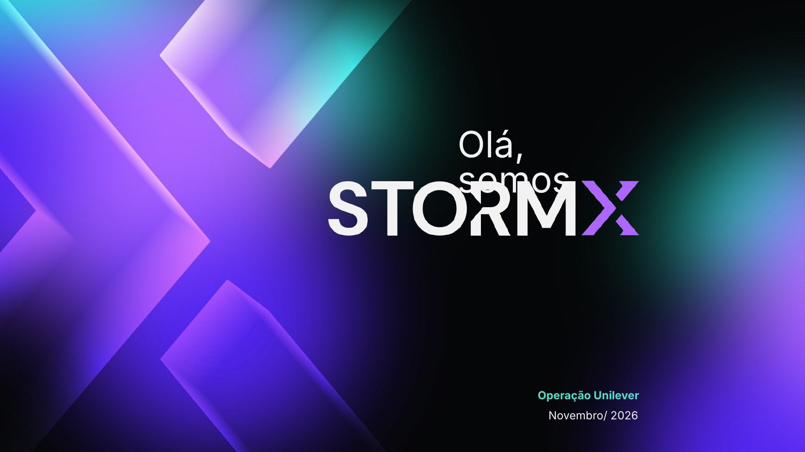
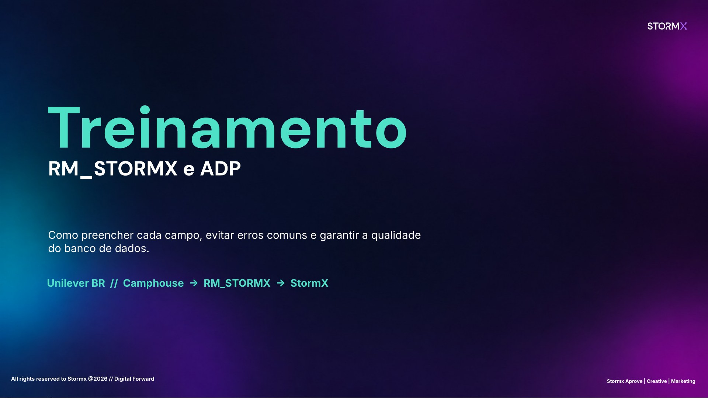
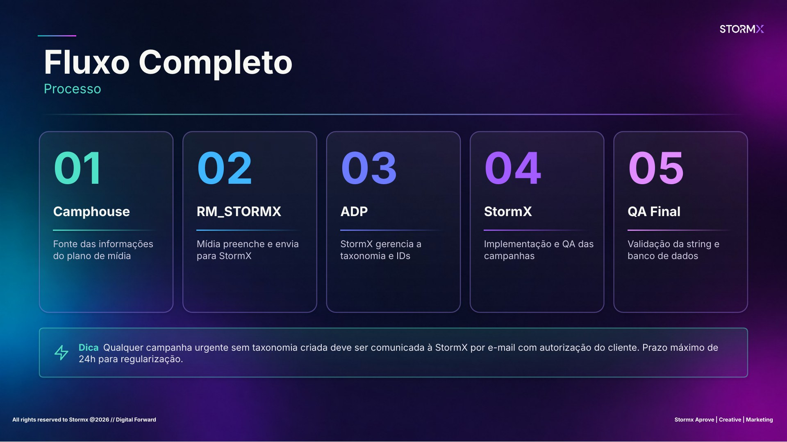
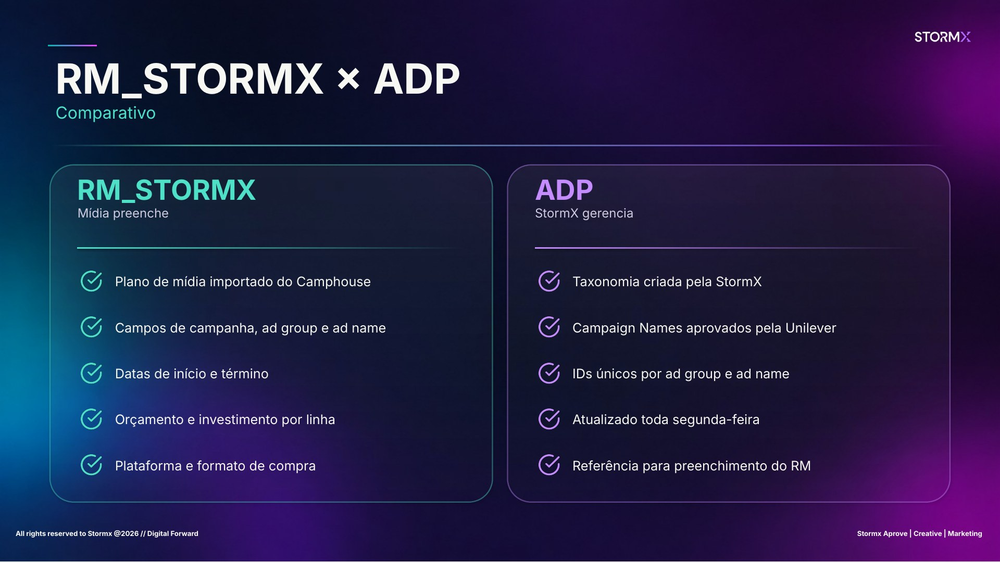
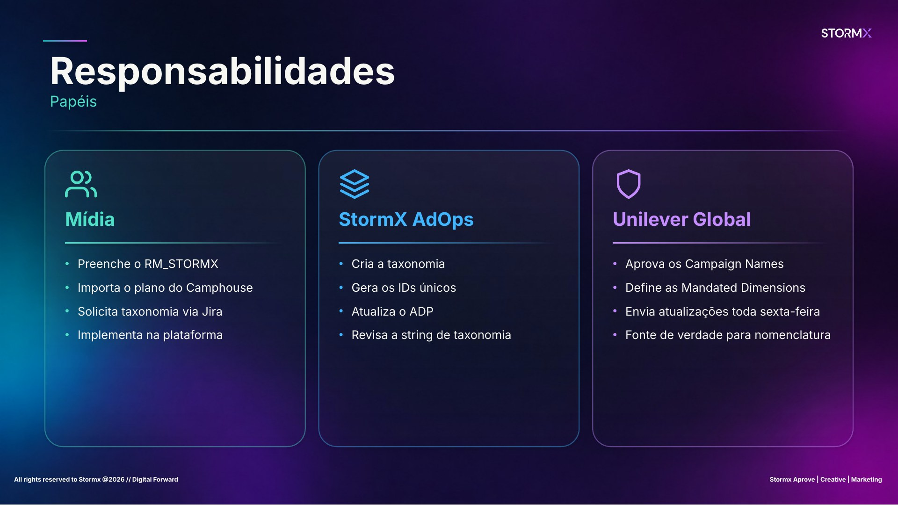
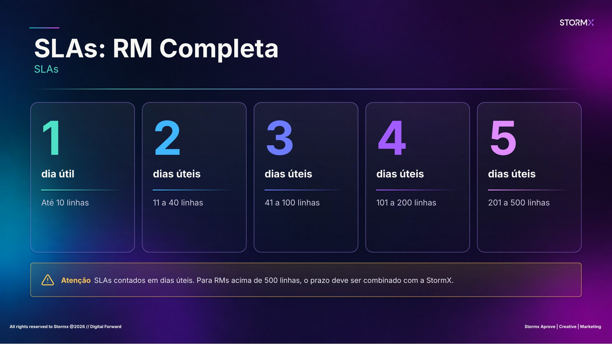
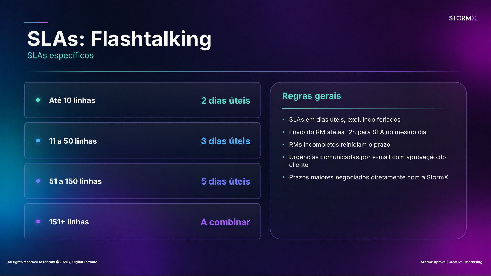
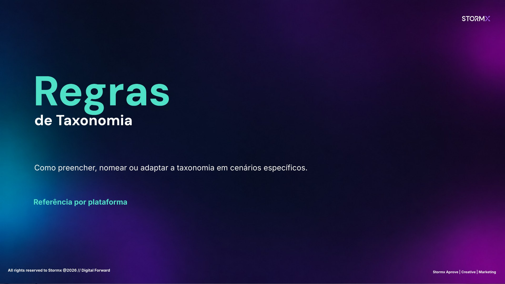
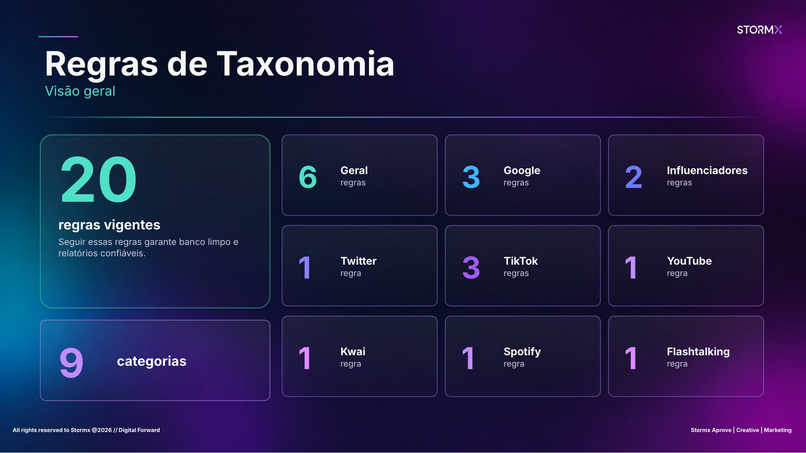
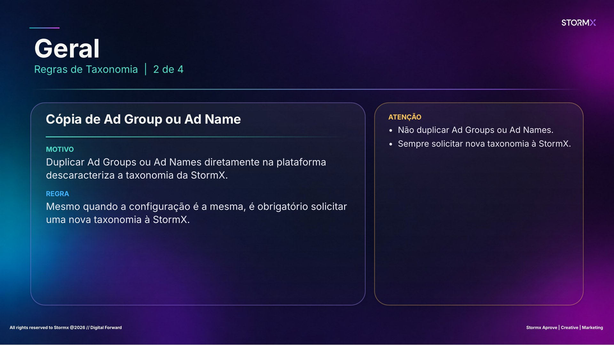
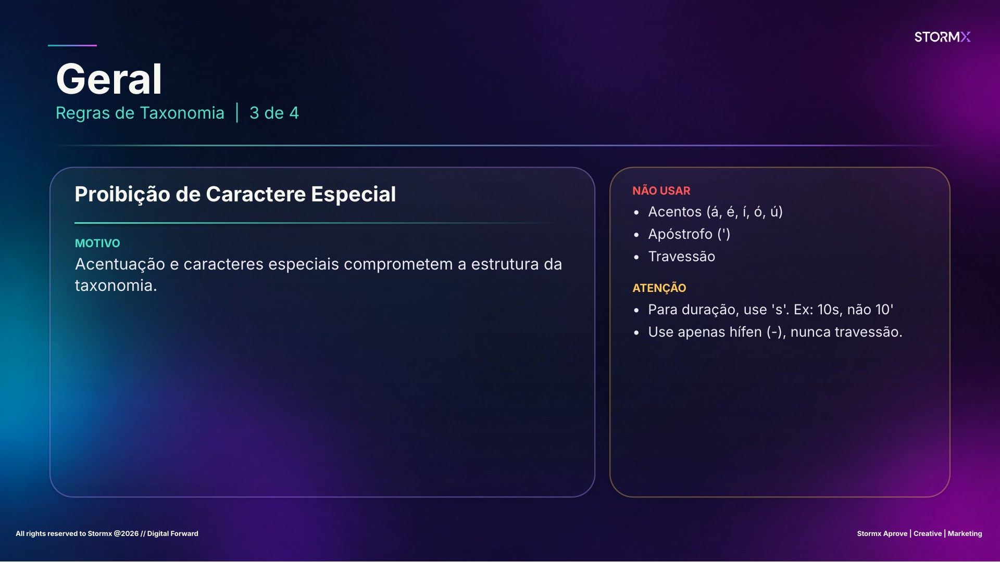
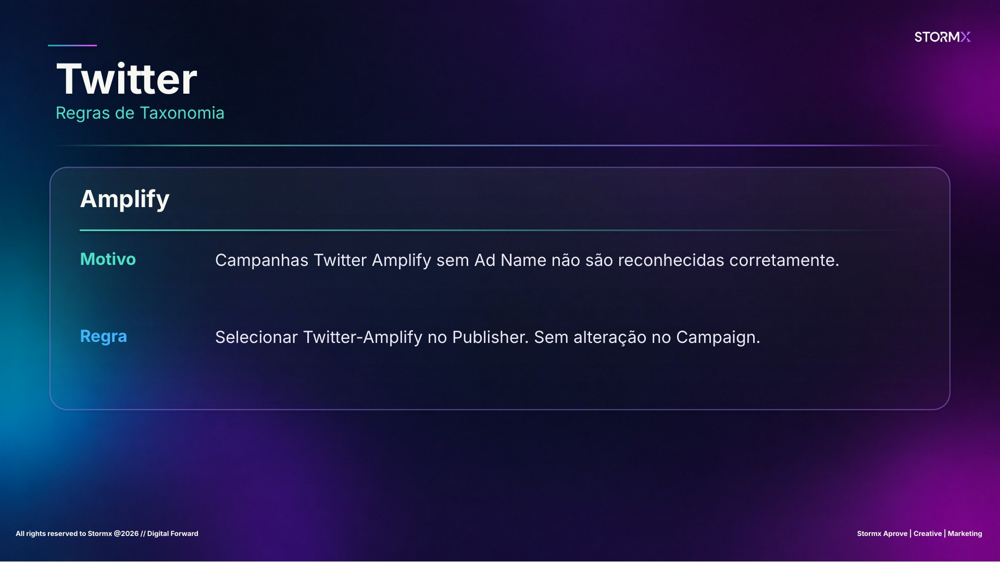
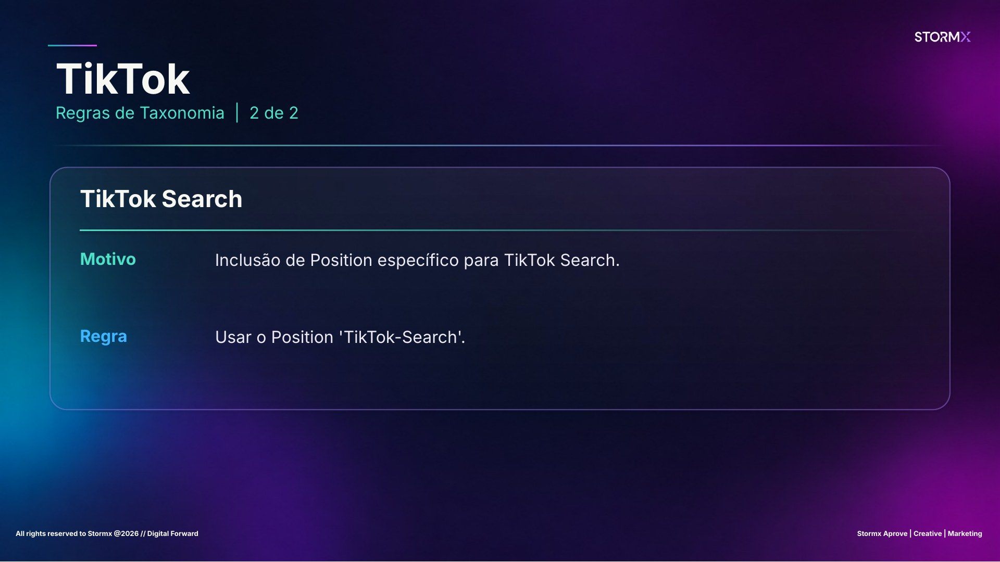
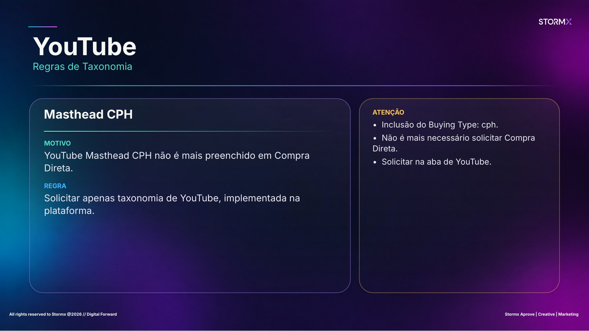
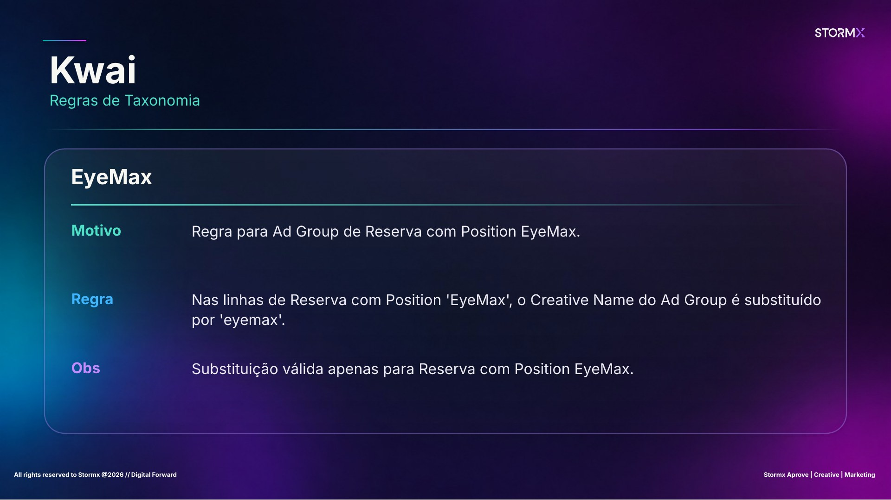
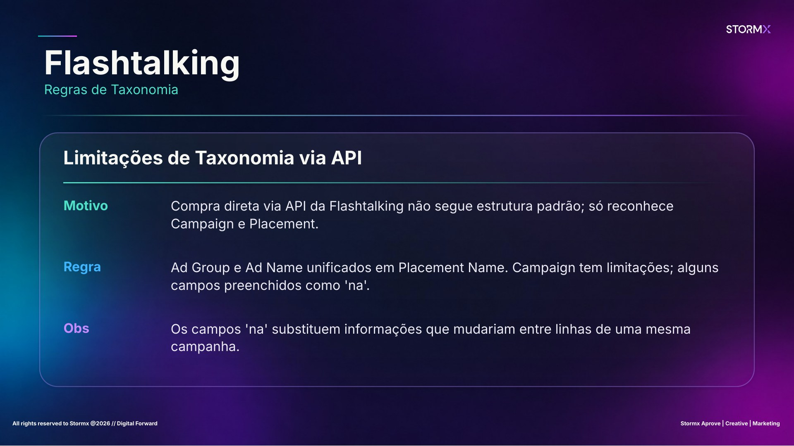
![Slide 6: Importando o Plano de Mídia | Passo a passo | 01 | 02 | 03 | Exportar do Camphouse | Copiar para o RM | Colar como Valores | Baixe o plano de mídia atualizado em formato Excel. Certifique-se de que todos os campos obrigatórios estão preenchidos. | Copie as linhas do plano exportado. Selecione as células correspondentes na aba correta do RM_STORMX. | Use Colar Especial > Valores (Ctrl+Shift+V ou Alt+E+S+V). Nunca cole com formatação. | Atenção Nunca copie e cole com formatação. Isso quebra fórmulas e campos calculados do RM_STORMX.](slides/slide-06.jpg)
![Slide 8: Código de Cores do RM | Referência visual | Roxo | Amarelo | Azul | Cinza | Dropdown, obrigatório | Texto livre, digitar | Automático, não editar | StormX, não editar | Campos com lista suspensa. Selecione uma das opções disponíveis. Preenchimento obrigatório. | Campos de preenchimento livre. Digite o valor correto conforme o plano de mídia. | Campos calculados ou preenchidos automaticamente pelo sistema. Nunca editar manualmente. | Campos gerenciados exclusivamente pela StormX. Mídia não deve alterar esses campos.](slides/slide-08.jpg)
![Slide 9: Coluna Linha G | Campo crítico | O que é | O campo Linha G identifica o tipo de linha no plano de mídia. Cada linha representa uma configuração única de campanha, ad group e ad name na plataforma. | Como preencher | 01 | Verificar no ADP o ID correto para cada linha | 02 | Cada linha do plano = um ID único | 03 | Nunca repetir o mesmo ID em ad groups diferentes | 04 | Solicitar novo ID à StormX se não encontrar | Erro mais comum | 05 | Validar antes de enviar o RM completo | Usar o mesmo Linha G para ad groups diferentes. Isso gera duplicidade no banco e impede a correta leitura dos dados. | Por que é crítico garante a rastreabilidade de cada anúncio no banco de dados.](slides/slide-09.jpg)
![Slide 10: De Onde Vêm os Dropdowns | Referência | Mandated Dimensions | Dimensões obrigatórias definidas pela Unilever Global para toda a taxonomia. | Galileo | Ferramenta global de nomenclatura. Define a parte global da taxonomia, separada por _. | Brand Pos Level | Nível de posicionamento da marca. Definido pelo Global, reflete a estratégia de marca. | Freetext | Parte local da taxonomia, separada por |. Pode ser alterado sem aprovação do Global. | Campaign by Brand Pos | Campanhas agrupadas por posicionamento de marca. Atualizado toda sexta pelo Global. | Documentação UL | Documentação oficial da Unilever Brasil. Fonte de verdade para regras e exceções. | Dica O Galileo é a parte Global (separada por _) e o Freetext é a parte Local (separada por |). O Local pode ser alterado com aprovação UL Brasil.](slides/slide-10.jpg)
![Slide 11: Validando a String de Taxonomia | Qualidade | 01 | Verificar Campos Obrigatórios | Confirme que todos os campos roxos (dropdown obrigatório) estão preenchidos. Nenhum campo pode estar vazio ou com valor inválido. | 02 | Verificar Caracteres Especiais | Revise todos os campos de texto livre. Remova acentos, apóstrofos, travessões e caracteres especiais. Use apenas letras sem acento, números e hífen. | 03 | Confirmar na NC Tool | Cole a string gerada na NC Tool para validação final. Aguarde a confirmação de que não há erros antes de implementar na plataforma. | Atenção Nunca implemente uma campanha sem validar a string na NC Tool. Erros de taxonomia sujam o banco e geram retrabalho.](slides/slide-11.jpg)
![Slide 12: Erros Recorrentes | Atenção | Ad Name Duplicado | Cópia Sem Nova Taxonomia | Caractere Especial | Usar o mesmo Ad Name em mais de um Ad Group. Sempre solicitar um novo ID à StormX para cada linha. | Duplicar Ad Groups na plataforma sem solicitar novo ID. Sempre solicitar nova taxonomia à StormX. | Incluir acentos, apóstrofos ou símbolos. Usar apenas letras sem acento, números e hífen. | "Verificar Plano de Mídia" | Taxonomia de Plataforma Errada | Deixar campos com esse placeholder. Substituir por informações reais antes de implementar. | Aplicar a taxonomia de uma plataforma em outra. Cada plataforma tem sua estrutura específica.](slides/slide-12.jpg)
![Slide 13: Regras Importantes | Regras | 01 | Proibido subir sem taxonomia | Nenhuma campanha pode ser implementada na plataforma sem taxonomia criada pela StormX. | 02 | Nunca reduzir por conta própria | Qualquer ajuste no plano de mídia deve ser comunicado à StormX antes de ser implementado. | 03 | Campaign Name genérico é temporário | Always On Non Search só é aceito quando o Campaign Name oficial ainda não foi aprovado pelo Global. | 04 | Campaign Local = Campaign Name global | O Campaign Local deve sempre ser idêntico ao Campaign Name global enviado pela Unilever. | 05 | Genérica em feriado: corrigir em 24h | Taxonomia genérica usada em feriados ou finais de semana deve ser corrigida em até 24 horas úteis.](slides/slide-13.jpg)
![Slide 15: BRD / INF / UGC | Classificação | BRD | INF | UGC | Brand Say | Com Influenciador | User Generated | Conteúdo patrocinado pela marca sem influenciador. Não deve haver link de influenciador associado. | Campanha com influenciador. É obrigatório informar o link correspondente ao conteúdo do influenciador. | Conteúdo do influenciador com @handle. O link é obrigatório. O Influencer Handle substitui o Influencer Name. | Atenção INF e UGC exigem link obrigatório. Sem o link, a taxonomia fica incompleta e o banco não identifica o influenciador corretamente.](slides/slide-15.jpg)
![Slide 16: Datas e Alterações de Taxonomia | Prazos | Taxonomia genérica → 24h | Campaign Name oficial substitui | Twitter Amplify → correção retroativa | Qualquer campanha que utilize taxonomia genérica (feriados, urgências) deve ter a taxonomia corrigida para a versão oficial em até 24 horas úteis após a implementação. | Assim que o Global enviar o Campaign Name oficial, todas as taxonomias relacionadas devem ser atualizadas para refletir o nome correto, independentemente do volume de linhas. | Campanhas de Twitter Amplify implementadas sem o Publisher correto (Twitter-Amplify) devem ser corrigidas retroativamente no banco. Contatar a StormX para regularização.](slides/slide-16.jpg)
![Slide 19: Checklist Final | Validação | Preenchimento | Validação e envio | Plano importado corretamente do Camphouse | Campaign Name conforme o ADP | Aba correta selecionada para a plataforma | Campaign Local = Campaign Name Global | Todos os campos roxos preenchidos | Links de influenciador informados (INF/UGC) | Nenhum caractere especial ou acento | String validada na NC Tool | Ad Names únicos por Ad Group | RM enviado para StormX com antecedência | RM validada = taxonomia correta = banco limpo = relatório confiável](slides/slide-19.jpg)
![Slide 22: Geral | Regras de Taxonomia | 1 de 4 | Taxonomia por Plataforma | Ad Name Duplicado entre Ad Groups | MOTIVO | Cada plataforma possui sua própria estrutura de quebra de taxonomia, e elas não são intercambiáveis. | REGRA | Não é permitido, em nenhuma hipótese, utilizar a taxonomia de uma plataforma em outra. | OBS | Confirme sempre a estrutura de taxonomia específica da plataforma antes de implementar. | ATENÇÃO | • Proibido subir campanha sem a taxonomia criada pela StormX. | EXCEÇÃO | • Campanha urgente: comunicar a StormX por e-mail com autorização do cliente. Prazo de até 24h. | MOTIVO | Cada Ad Group deve ter seu próprio Ad Name, com um ID correspondente e exclusivo. | REGRA | Não é permitido utilizar o mesmo Ad Name em mais de um Ad Group, mesmo quando o asset é idêntico.](slides/slide-22.jpg)
![Slide 25: Geral | Regras de Taxonomia | 4 de 4 | Taxonomia Genérica | Campaign Name e Campaign Local | MOTIVO | Ad Names sem taxonomia comprometem o banco. Taxonomia genérica aceita apenas em casos específicos. | OBS | Obrigatório solicitar ajuste para versão correta em até 24h úteis. | QUANDO | • Implementação em feriado/final de semana sem informações completas. | • Campanha urgente sem informações ou criativo disponível. | MOTIVO | O Campaign Name é o nome global, definido pela Unilever. O Campaign Local deve ser igual ao Campaign Name global. | ATENÇÃO | • Proibido Campaign Name genérico, exceto quando não aprovado pelo Global. | • Assim que o Global enviar o nome oficial, ajustar todas as taxonomias. | EXCEÇÃO | • Se o Campaign Local precisar ser diferente, enviar aprovação do cliente para carolina.dobner@stormx.com.br.](slides/slide-25.jpg)
![Slide 26: Google | Regras de Taxonomia | PMax | Search | Demand Gen | MOTIVO | O PMax não possui Ad Group, impedindo identificação correta no banco. | REGRA | Incluir Format Type Local no Campaign. Preencher 'Google-pmax' no ADP, Publisher: google-pmax. | OBS | PMax terá uma quebra a mais de freetext, o Format Type Local: pmax. | MOTIVO | Padronizar a identificação de campanhas de Search. | REGRA | O campo Publisher deve ser preenchido como google-search. | MOTIVO | Demand Gen pode veicular em Google e YouTube, e o Publisher precisa refletir essa origem. | REGRA | Quando Plataforma = Google: Google → google-ads | YouTube → youtube | OBS | Verificar sempre o Publisher original antes de definir o valor final.](slides/slide-26.jpg)
![Slide 27: Influenciadores | Regras de Taxonomia | Classificação e Taxonomia por Handle | Influencer Post Type | MOTIVO | A classificação deve estar de acordo com a estratégia da campanha. | REGRA | Com Influencer Handle, a quebra Influencer Name cai; o @ passa para Influencer-Handle do Galileo. | ATENÇÃO | • Se BRD, não deve haver link de influenciador. | • Se houver influenciador, informar link e usar INF ou UGC. | MOTIVO | O Influencer Post Type aceita opções específicas por valor de Influencer. | REGRA | bsay: só na | bhamp: dark ou boosted | ihamp: dark ou boosted | OBS | Usado em Social: Meta, TikTok, Pinterest e Twitter.](slides/slide-27.jpg)
![Slide 29: TikTok | Regras de Taxonomia | 1 de 2 | Branded Mission e Branded Buzz | TikTok Shop | MOTIVO | Esses formatos não são mais preenchidos em Compra Direta. | REGRA | Solicitar apenas taxonomia de TikTok, implementada na própria plataforma. | ATENÇÃO | • Não é mais necessário solicitar taxonomia de Compra Direta. | • Solicitar na aba de TikTok. | MOTIVO | TikTok Shop ainda não permite extração via API; dados preenchidos manualmente. | REGRA | Só possui taxonomia de Campaign. Usar Campaign padrão de TikTok com Publisher, Format e Location. | ATENÇÃO | • Solução temporária. | • Solicitar na aba de TikTok. | • Position: TikTok-Shop-Skippable.](slides/slide-29.jpg)
![Slide 35: Recap Final | Resumo | Fluxo Completo | Regras de Preenchimento | Camphouse → RM_STORMX → ADP → StormX → QA. Cada etapa tem um responsável definido. | Sem taxonomia, sem implementação. Caracteres especiais proibidos. Campaign Local = Campaign Name Global. | SLAs e Prazos | Responsabilidades | RM até 10 linhas: 1 dia. Flashtalking 51 a 150 linhas: 5 dias. Urgências por e-mail com aprovação. | Mídia preenche e envia. StormX cria taxonomia e gera IDs. Unilever Global aprova Campaign Names.](slides/slide-35.jpg)